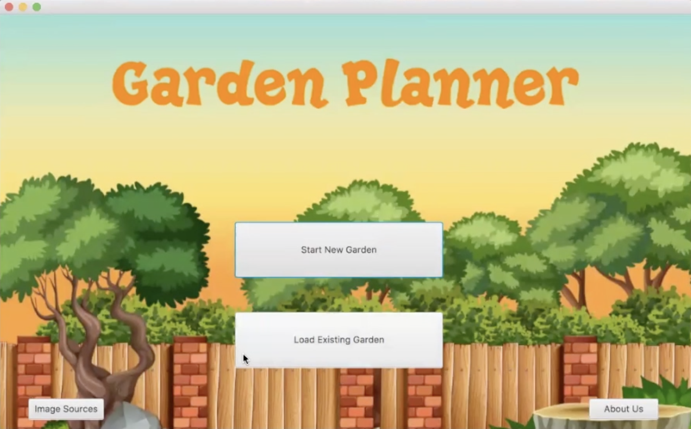
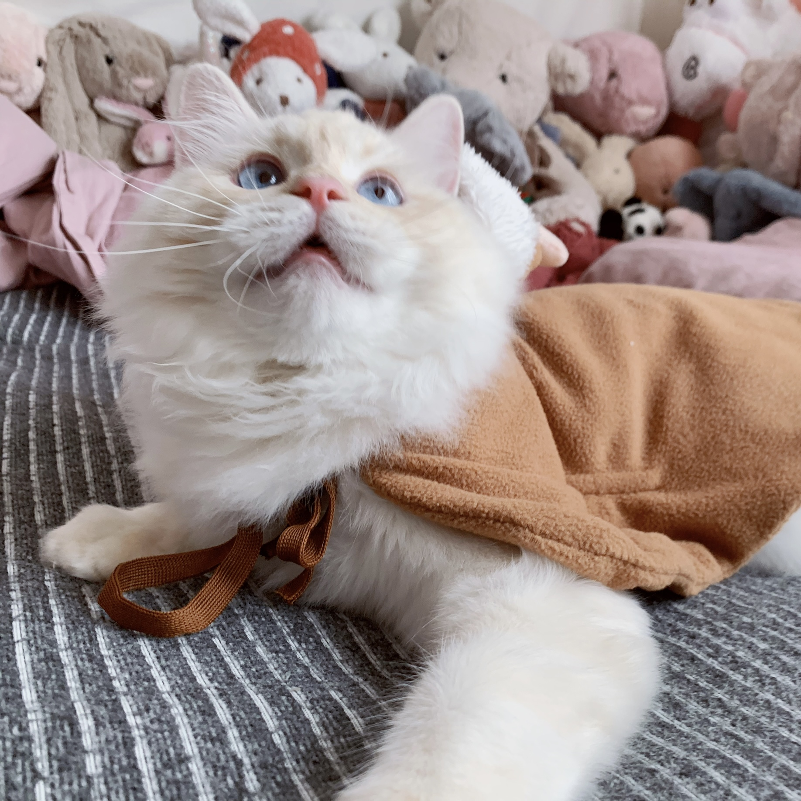

Welcome Back to My Projects ⌯'ㅅ'⌯
-
Garden Designer Program
A Java program takes information provided by the user to filter out the contradicted plants and then produce a list of suitable local plants for user to choose to put in the garden, finally, the program will return the garden designed by user with local plants. - 
-
CACC Web Design
An Angular project includes homepage design and complete. The functionalities of homepage are ale to direct users to other pages, able to update published exhibits from navigation bar, able to show recommended exhibit, related video and able to show information about CACC. Moreover, the homepage connects with backend for admin and user privileges. 
My Life
-
ᗦ↞◃ My cat: Milky
I am a cat-person and I do have a Ragdoll called Milky. He is nearly two years old and has a pair of big blue eyes. If you are a cat-person, you will definitely love him. - 
-
˙³˙ My love: Photography
I fell in love with photography from the first time I looked the outside world through a camera. Ten years past, I still keep it as my favorite hobby.